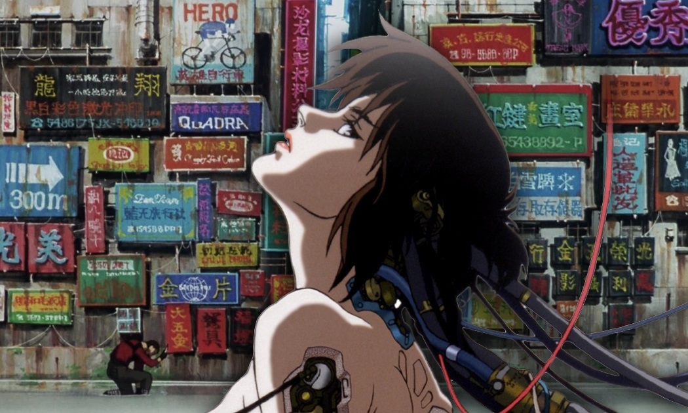

赛博朋克简介
赛博朋克是一种科幻文化流派，起源于20世纪80年代。它通常包括高度先进的科技、信息技术和对社会的深刻影响。赛博朋克作品常常探讨了科技、隐私、自由和道德等议题。
赛博朋克的历史
赛博朋克的起源可以追溯到20世纪60年代末和70年代初的新浪潮文学，如威廉·吉布森的作品。赛博朋克的流派在80年代初期迅速发展，影响了文学、电影和电子游戏等多个领域。
赛博朋克的特点
赛博朋克作品常常呈现出未来大都市环境、人工智能、虚拟现实和生物工程等元素。它的世界观通常是阴暗、充满冲突，主人公常常是反抗者或独行侠。
